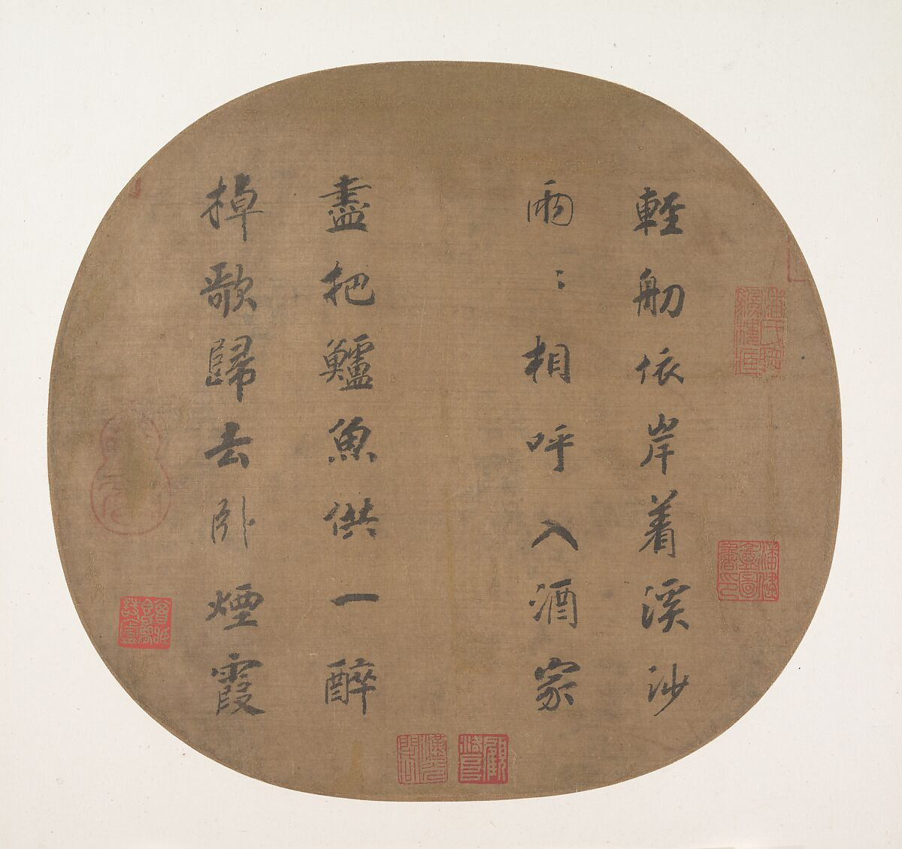
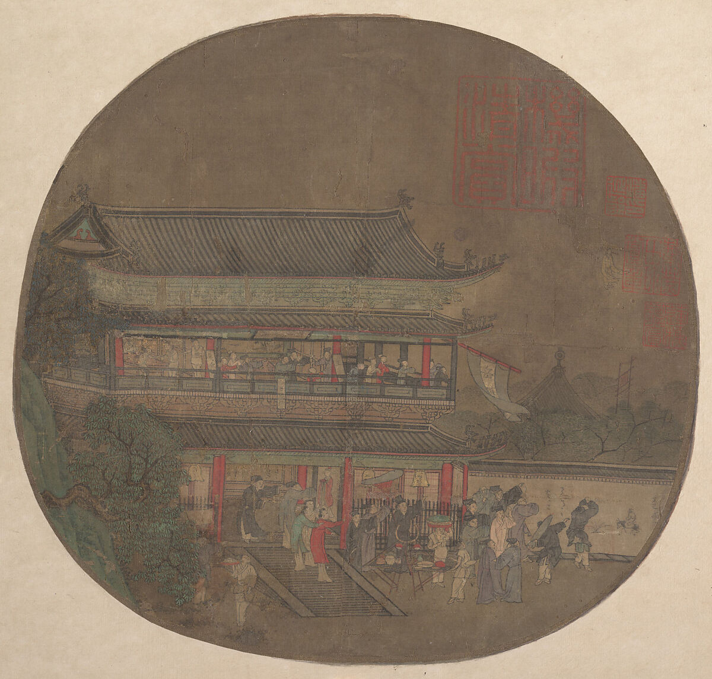
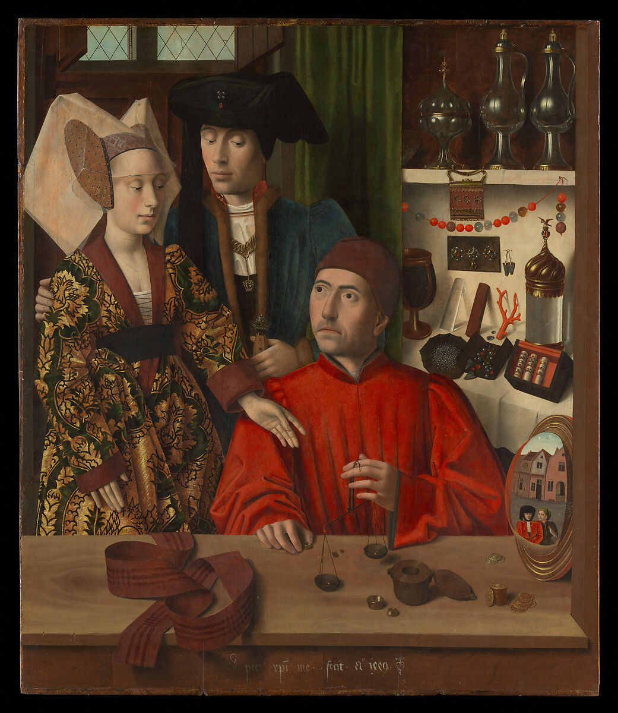
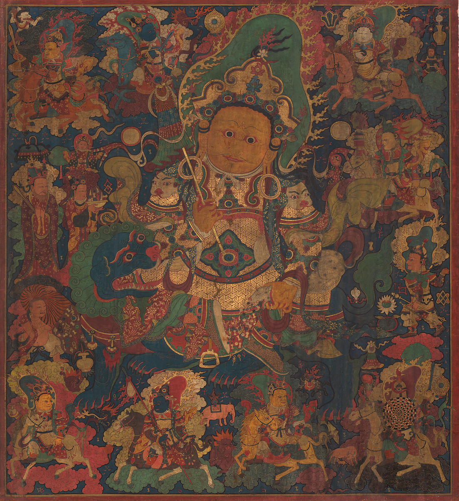
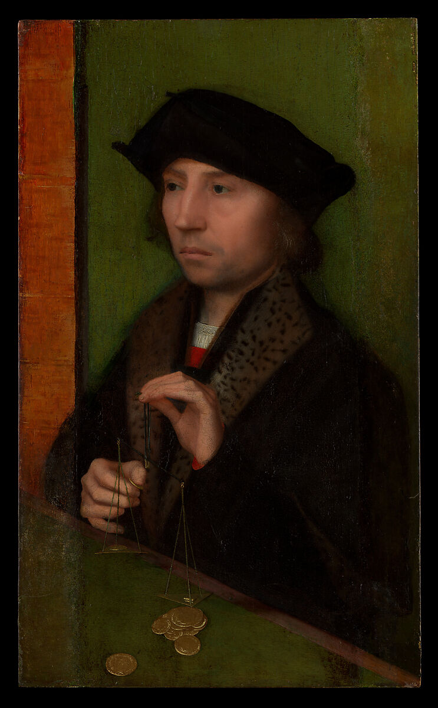
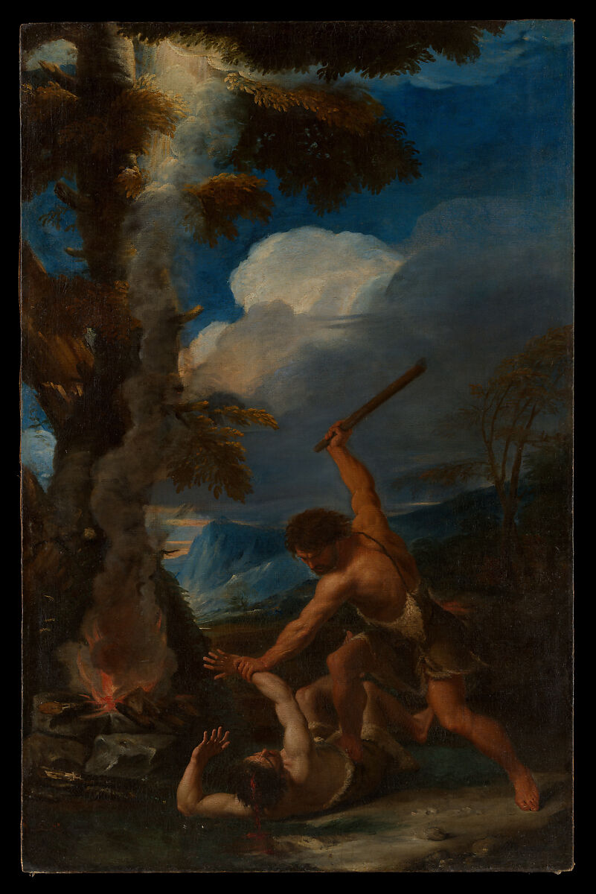
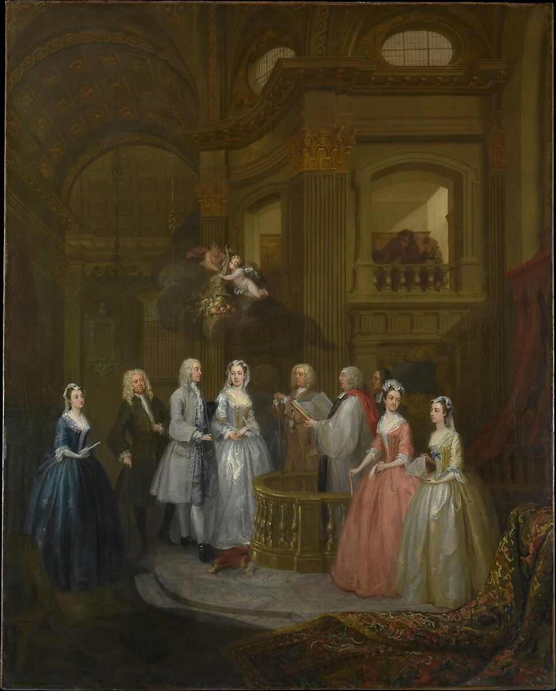
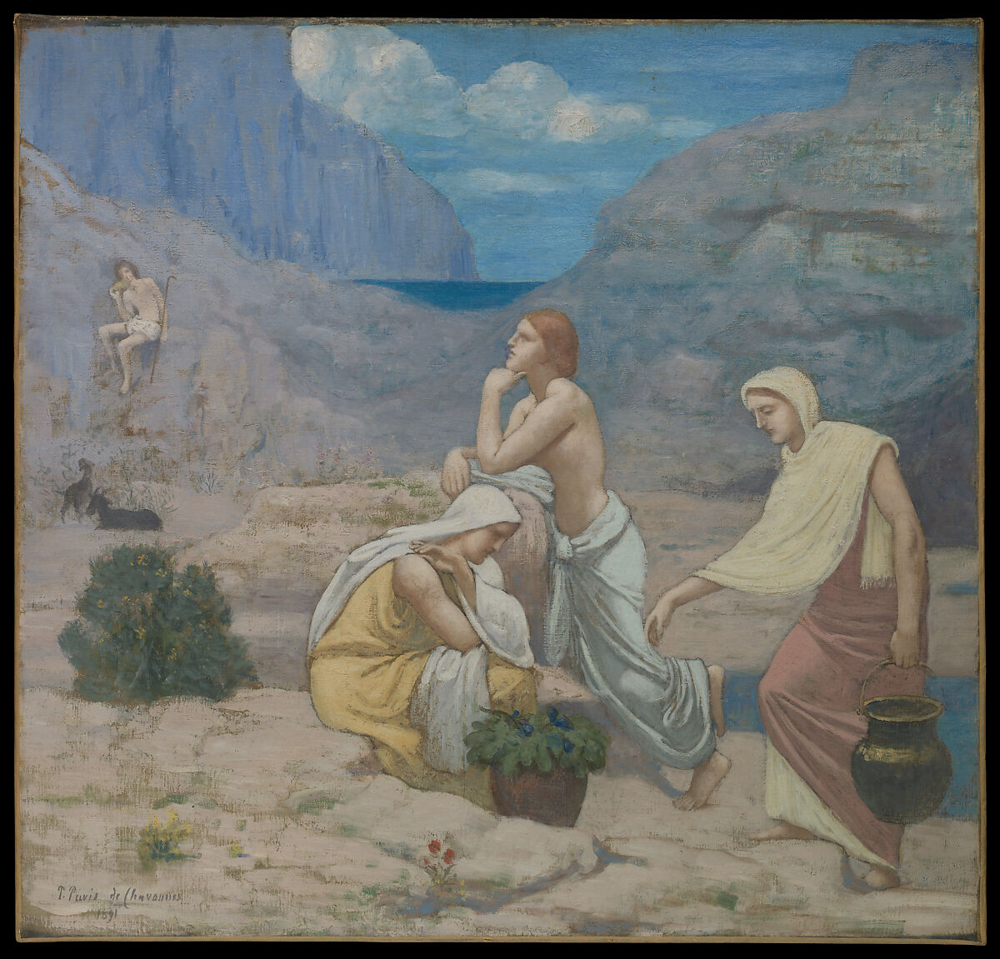

Css Float
Using CSS Float and Clear Properties

Quatrain on fishermen,Emperor Gaozong, 1162

The Immortal Lü Dongbin Appearing over the Yueyang Pavilion,late 13th-early 14th century

A Goldsmith in his Shop,Petrus Christus, 1449

Vaishravana, the Guardian of Buddhism and Protector of Riches,Tibet,15th Cenutry

Man Weighing Gold,Adriaen Isenbrant, 1515-1520

Cain Slaying Abel,Pier Francesco Mola, 1650-1652

The Wedding of Stephen Beckingham and Mary Cox, William Hogarth, 1729

The Shepherd's Song,Pierre Puvis de Chavannes, 1891